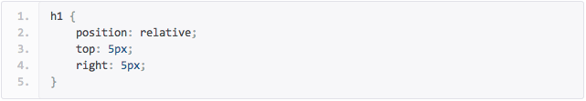
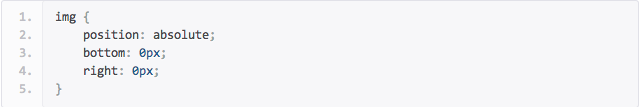

Understanding CSS Positioning
How To Use Relative Positioning?
- Positioning an element relatively places the element relative to page margins of your document or relevant container.Relative position accepts the box offset properties top, right, bottom, and left. These box offset properties allow the element to be precisely positioned, shifting the element from its default position in any direction.
- CSS Syntax
position: relative
- For example, if you had a header that you wanted to be positioned in the upper left hand corner of the screen, then the code may look something like this.

How To Use Absolute Positioning?
- Positioning an element absolutely, removes the element from the normal flow of your HTML file, and positions it to the top left of its nearest parent element that has a position declared other than static. If no parent element with a position other than static exists then it will be positioned from the top left of the browser window. This is a very powerful type of positioning that allows you to literally place any page element exactly where you want it. You use the positioning attributes top, left bottom and right to set the location. Remember that these values will be relative to the next parent element with relative (or absolute) positioning. If there is no such parent, it will default all the way back up to the element itself meaning it will be placed relatively to the page itself. In essence, abolution position place elements in relation to the browser window or parent element
- CSS Syntax
position: absolute
- For example, If you wanted to position an image in the lower right corner of the screen, for instance, your code may look something like this.

How To Use Fixed Positioning?
- Positioning an element with the fixed value, is the same as absolute except the parent element is always the browser window. It makes no difference if the fixed element is nested inside other positioned elements. In essence, a fixed position element is positioned relative to the viewport, or the browser window itself.
- CSS Syntax
position: fixed